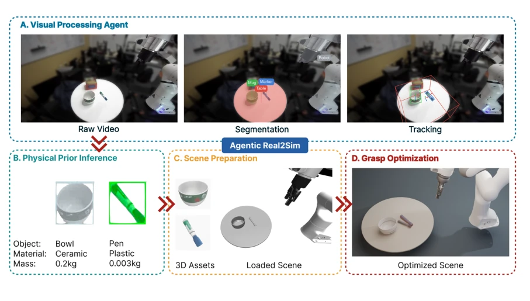
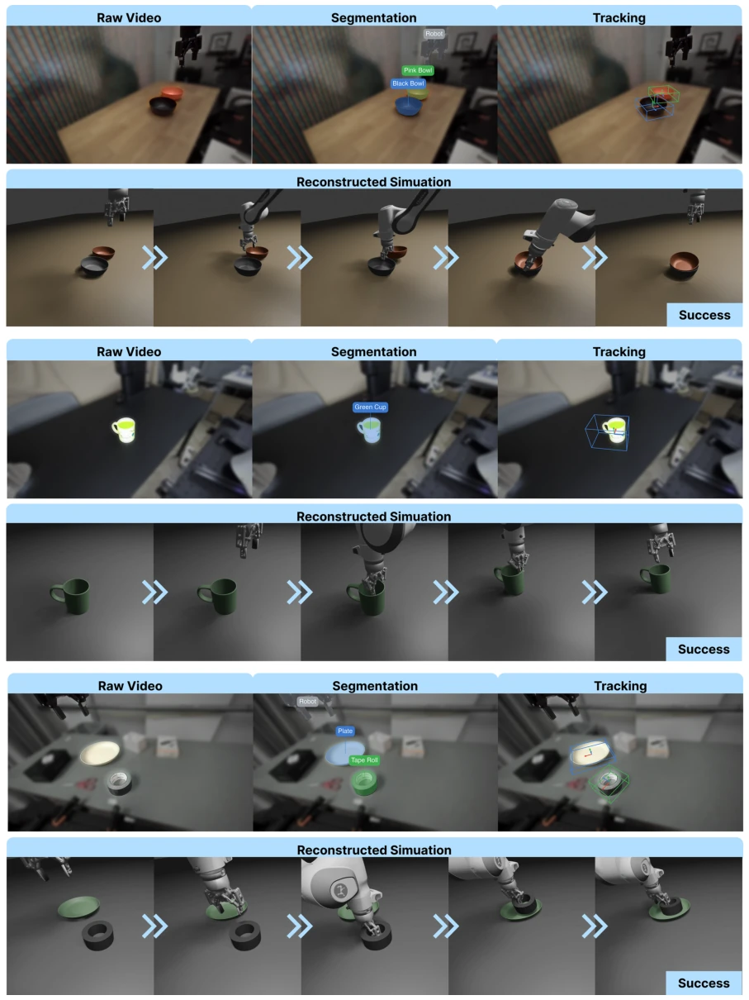
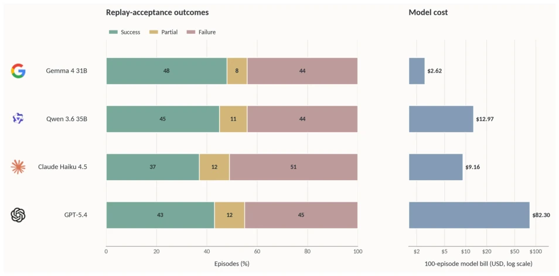
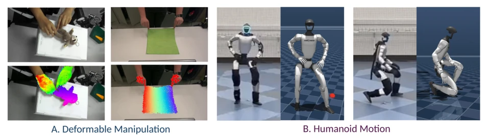

This paper attempts to use 'agents' to convert real-world robot operation videos into runnable simulations, which sounds like equipping a physics engine with a brain. Agentic Real2Sim indeed transforms Real2Sim from 'manual tuning' to 'automated pipeline', which is commendable. It coordinates visual and physical tools through VLM agents, achieving conversion from real recordings to MuJoCo digital twins. But do not celebrate too early; the success rate has not exceeded 50%, indicating there are still many pitfalls in visual and physical inference, and it remains distant from industrial application. However, replacing closed-source models with a 31B open-source model saves 30 times the cost, which is a well-calculated account. For teams wanting to conduct simulation data augmentation but with limited budgets, this is a good reference, but do not expect it to perfectly reproduce all physical interactions with one click, especially complex contact scenarios. Additionally, the framework's sensitivity to upstream perception errors is a major hazard; once segmentation or pose tracking fails, subsequent physical parameters are all wasted, and this 'garbage in, garbage out' risk is particularly fatal in automated workflows.
Real-world robot operation data (such as DROID) is abundant, but throwing it directly into simulators to train policies often does not work. Existing Real2Sim works [15] mainly focus on asset reconstruction, TwinAligner [5] focuses on physical alignment, but they usually handle isolated objects or specific scenarios, lacking automated conversion of complete interaction episodes. Although LychSim [14] etc. use VLM to generate scenes, they do not solve the end-to-end alignment from real videos to physical simulation episodes. The core pain point lies in: real recordings contain complex elements such as cameras, robots, object states, contact forces, etc., and manually cleaning meshes, aligning coordinate systems, and inferring physical parameters is extremely time-consuming and fragile. This paper aims to fill this gap, achieving scalable, physically faithful digital twin conversion, supporting downstream policy learning. Especially for multimodal tasks, such as deformable objects and humanoid motion, existing toolchains are often fragmented and cannot be handled uniformly, which limits the efficiency of large-scale simulation data generation.
The framework core is 'agent decision + deterministic tools'. The Pipeline is divided into four steps: 1. Visual Processing Agent: extracts segmentation, depth, geometry, and pose from videos (using SAM 3, FoundationPose). 2. Physical Prior Inference Agent: uses VLM to infer physical attributes such as object identity, material, mass, etc. 3. Scene Preparation Agent: aligns robot base, camera, ground, and loads into MuJoCo. 4. Simulation In-Grasp Optimization: optimizes object position through trial and error to ensure successful grasping. The key innovation lies in the 'episode contract', which defines a unified data structure, allowing rigid, deformable (PhysTwin), and humanoid (BFM-Zero) tasks to reuse the same logic. VLM is only responsible for bounded decisions (e.g., selecting keyframes, selecting objects), while underlying tools are responsible for execution, reducing VLM hallucination risks. This decoupling design allows changing the VLM backend without rewriting underlying code, improving system flexibility and maintainability. Additionally, the system introduces a critic mechanism, allowing retries when keyframe selection or pose tracking fails, increasing the robustness of the workflow.

Figure 1 | Agentic Real2Sim architecture. A recorded DROID episode is converted into a simulatable digital twin through four linked agents: The visual processing agent from raw video extracts segmentation and depth masks, geometries and object poses. The physical-prior inference agent attaches object identity, material class, mass hints, and other constitutive properties needed by the simulator. The scene preparation agent initializes a scene with the robot’s initial state, cameras, and reconstructed geometry, and places objects of interest in the correct locations. Simulator-in- the-loop grasp optimization further optimizes object placements to enable successful grasping. The same episode contract supplies the inputs and feedback channels used by the rigid, deformable, and humanoid adapte
Evaluated on DROID-100, the metric is 'Playback Success Rate' (VLM judge scoring). The Gemma 4 31B open-source model achieved 48/100 success, with a cost of only 2.62 USD, while GPT-5.4 requires 82.30 USD, with similar performance. This indicates that open-source models are sufficient for constrained decision tasks. Qualitative demonstrations were conducted for deformable and humanoid tasks, proving the framework's generality. But limitations are obvious: success rates for all backends did not exceed 50%, and it is sensitive to upstream perception errors. Future work needs to improve the robustness of physical inference. Experiments also show that VLM choice mainly affects cost rather than success rate; as long as the model possesses basic reasoning capabilities, it can handle scene understanding tasks. This provides an economically viable path for large-scale automated simulation data generation, but also reminds us that the bottleneck of visual perception remains the main obstacle for current Real2Sim.

Figure 2 | DROID episode conversion at scale. Representative episodes from DROID-100 spanning the sampled axes, each pairing the real DROID observation with its MuJoCo episode twin. Intermediate pipeline artifacts are exposed for selected scenes: object segmentation and FoundationPose pose-tracking overlays.

Figure 3 | Replay-acceptance outcomes and model cost across VLM backends. The left panel decomposes all 100 attempted DROID episodes into replay success, partial, and failure outcomes for each backend. Replay success denotes a best judge score of at least 8/10, partial a score of 7/10, and failure a score of 6/10 or lower or the absence of a valid judge record. The right panel reports the corresponding 100-episode model bill on a logarithmic scale. Observed replay-success counts range from 37 to 48 episodes, while model bills range from 2.62 to 82.30 USD.

Figure 4 | Deformable and humanoid episode conversion. Two non-rigid object manipulation settings that stress the same conversion contract beyond rigid manipulation. A: PhysTwin-style deformable episodes pair real interaction video with the recovered geometry and a deformation overlay. B: Unitree G1 humanoid clips of locomotion and short whole-body motions, retargeted from LAFAN1, where the simulated humanoid is shown against the real frames after the controller’s joint-level gains are tuned to match the reference trajectory in closed-loop simulation.